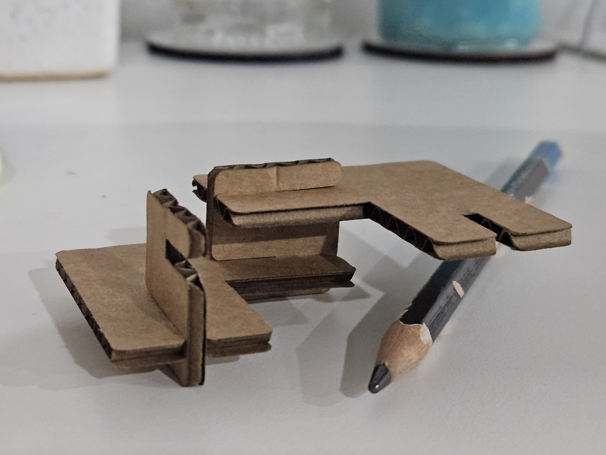
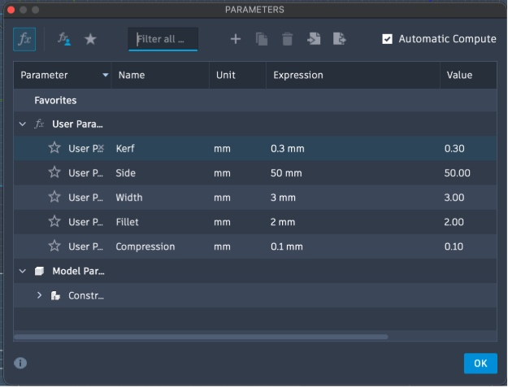
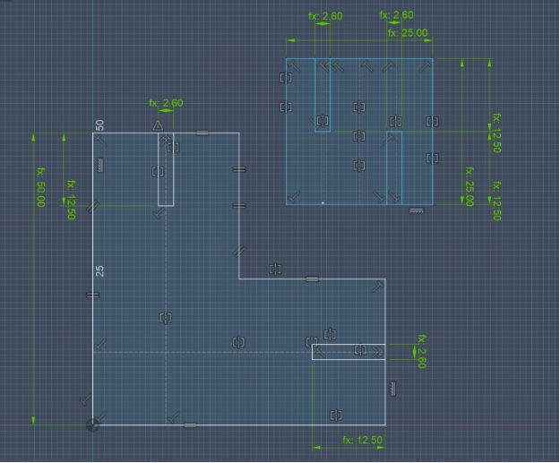
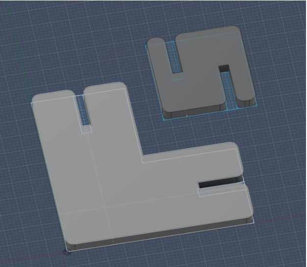
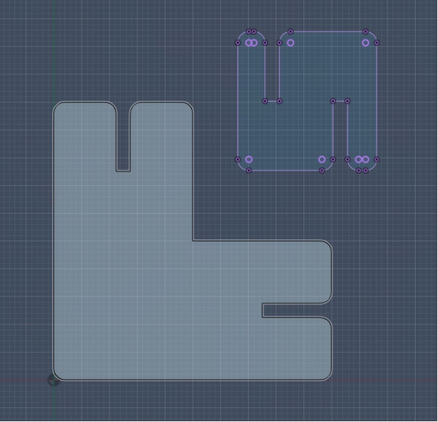
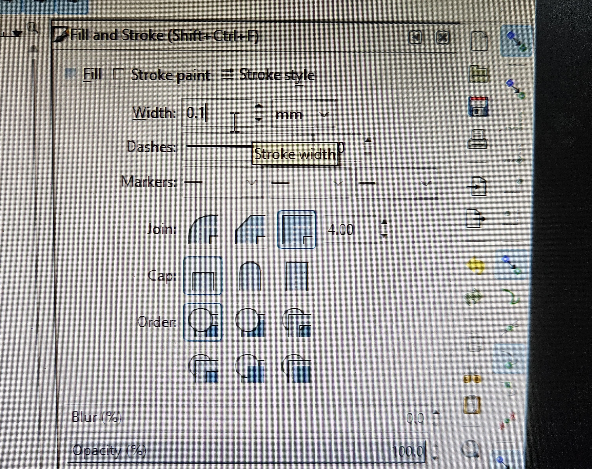
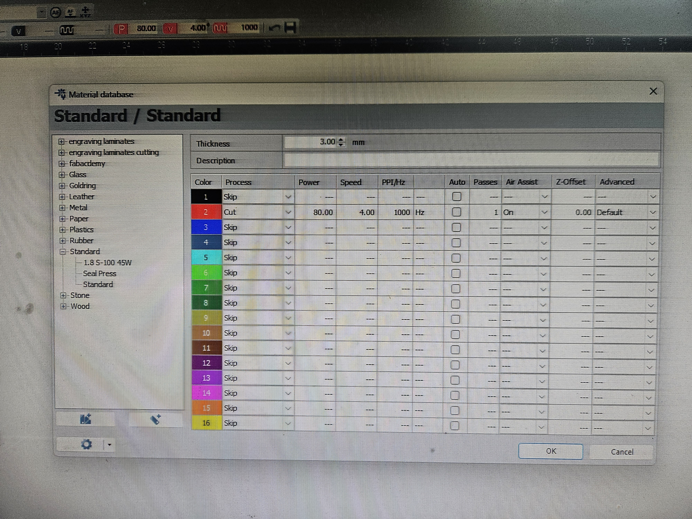
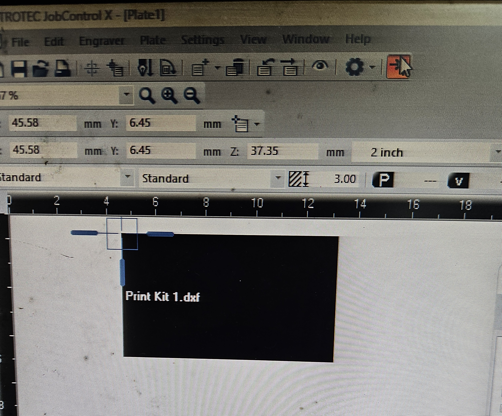
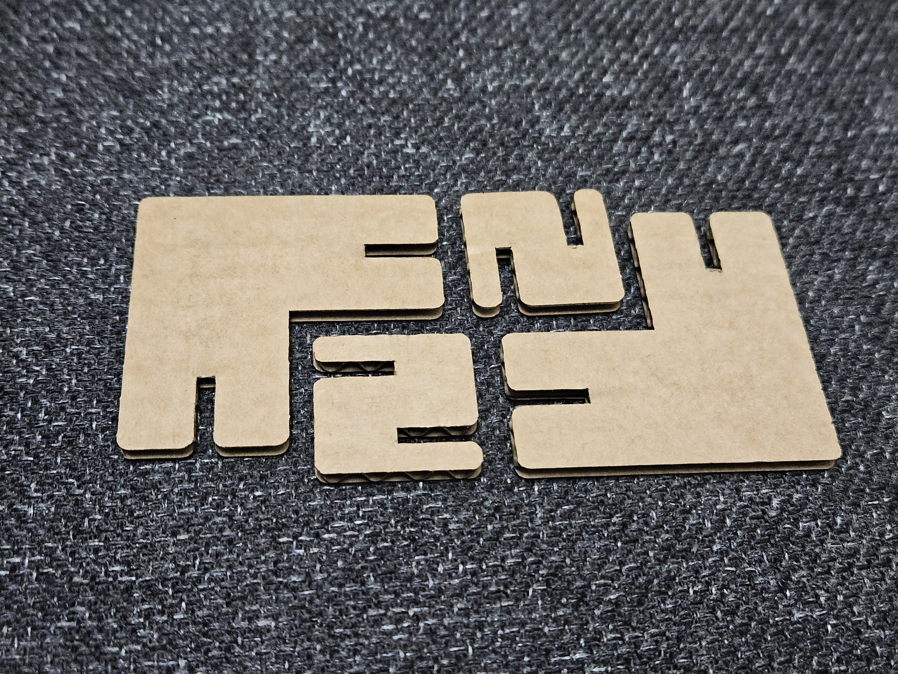

Laser-cut cardboard parametric construction kit — assembled
This week covered the use of computer-controlled cutting machines — the vinyl cutter and the laser cutter. The group assignment involved characterising the laser cutter's settings, while individually I designed and cut a parametric construction kit and produced a vinyl sticker.

Kerf, Compression and Fillet
Kerf — The width of material removed by a cutting tool during a cut. In laser cutting, kerf is the gap left by the laser beam. Accounting for kerf in a design ensures parts fit together correctly — slots are made slightly narrower so the cut produces the intended final dimension.
Compression — In the context of press-fit joints, compression refers to the intentional interference between two mating parts. A slot is designed slightly smaller than the tab that fits into it, so the material compresses slightly on assembly — creating a tight, friction-held joint that holds without glue or fasteners.

Parametric Construction Kit Design
Made the design of a parametric construction kit in Fusion 360. The kit consists of interlocking pieces whose slot dimensions are driven by parameters, making it easy to adjust the fit for any material thickness.
Parametric Design — A modelling approach where dimensions are driven by variables (parameters) rather than fixed values. Changing a single parameter — like material thickness — automatically updates all dependent geometry, making it easy to adapt a design for different materials or tolerances without redrawing from scratch.

Fillet and Chamfer
When laser cutting press-fit joints, internal corners tend to accumulate stress and can cause the material to crack when a tab is inserted.
Adding a small fillet (a rounded internal corner) or chamfer (an angled cut) to slot corners relieves this stress concentration, makes assembly easier by guiding the tab in, and significantly reduces the chance of the material splitting — especially important with brittle materials like acrylic.

Final 2D Sketch
Convert the 3D figure into a 2D sketch. If there are 2 bodies, the 2nd body will need to be selected and projected into the sketch of the first body (use shortcut P).

Preparing the File in Inkscape
- The construction kit was exported from Fusion 360 as a DXF and opened in Inkscape.
- For the laser cutter to recognise lines as cut paths, changed the fill to blank and stroke to 0.1mm using the Fill and Stroke dialog. Generally, strokes are used for cutting and fill for engraving.
- Changed the stroke colour to red. Different colours can be used for creating different rules for cutting and engraving.
- Saved the file as SVG and sent it to the system connected to the Laser Cutting Machine.

Setting Laser Cutter Parameters
In Trotec JobControl X, the material database was used to set the cut parameters for 3mm cardboard — Power 80, Speed 4.00, and 1000 Hz PPI with Air Assist on. These values control how deep and cleanly the laser cuts through the material without scorching the edges.

Sending the Job to the Laser Cutter
In the Trotec JobControl X, the DXF file sent from Inkscape appears as "Print Kit 1.dxf" on the cutting bed preview. The file was positioned on the material and the cut job was started from the software.

Final Cut & Assembly
The construction kit pieces were laser-cut from 3mm MDF and assembled into multiple configurations. The parametric kerf and compression values in the design ensured a snug press-fit between the interlocking tabs and slots — holding together firmly without glue or fasteners.